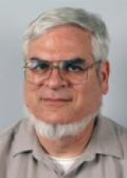

Please note: the AAS Obituaries are temporarily being hosted on this website while their full content is being ingested into the PubPub publishing platform newly adopted by the Bulletin of the American Astronomical Society. When the migration is complete, your existing links will take you to the final, migrated content. Contact peter.williams@aas.org with any questions.
David Burstein (1947-2009)
David Burstein, longtime galaxy researcher at Arizona State University, died on 26 December 2009 at age 62, of Pick's disease, a degenerative neurological condition whose symptoms are similar to those of Alzheimer's. Born 19 May 1947, Burstein grew up in New Jersey and developed his interest in science and mathematics at a young age. Initially, he had planned a career as a theoretical mathematician, but changed his mind during his undergraduate years at Wesleyan University. He received his bachelor's degree in astronomy from Wesleyan in 1969, having completed a senior thesis based on work with Van Vleck Observatory’s 24-inch Perkin reflecting telescope. Burstein went on to obtain his Ph.D. from the University of California, Santa Cruz, in 1978. His Ph.D. thesis, "The Structure and Metallicity of S0 Galaxies," was supervised by Sandy Faber.
In 1982, after post-docs at the National Radio Astronomy Observatory, in Charlottesville, Virginia, and the Carnegie Institution, in Washington, D.C., Burstein joined the astronomy faculty at Arizona State University, in Tempe, Arizona, where he taught for the next 26 years. During the 1980s, he joined a collaboration of astronomers that became known as the "Seven Samurai" (Burstein, Roger Davies, Alan Dressler, Sandra Faber, Donald Lynden-Bell, Roberto J. Terlevich, and Gary Wegner), who surveyed the distribution and movements of some 400 elliptical galaxies. Their controversial findings were announced by Burstein at a meeting of astronomers in Hawaii in January 1986. (See Burstein, et al, “Elliptical Galaxies and Non-Uniformities in the Hubble Flow,” in Galaxy Distances and Deviations from Universal Expansion, ed. B. F. Madore and R. B. Tully (Boston: D. Reidel), p. 123.) As memorably captured by science writer Dennis Overbye in The New York Times (23 October 1994): “They reported that a vast region of space 500 million light-years in diameter, containing hundreds of thousands of galaxies, was being drawn sideways, as it were, through expanding space, like a raft being pulled downstream at two million miles per hour toward some cosmic Niagara, a putative colossal concentration of mass later dubbed the Great Attractor.” The history of the project is told in Alan Dressler’s book, Voyage To The Great Attractor: Exploring Intergalactic Space.
During his career, David Burstein was author or co-author of well over 200 articles in journals and conference proceedings, as well as co-author of the college textbook 21st Century Astronomy. At ASU, he taught astronomy to many hundreds of students and served on numerous faculty committees, including a year as the president of the Academic Assembly. He was an avid fan of the Sun Devils football team. He is survived by his wife Gail; his daughter Elizabeth Browne (Eric) of Tucson; his son Jonathan Burstein (Kathy), of Delray Beach, FL; his grandson Andrew David Burstein; and his father-in-law Edmund T. Kelly, of Tempe.
In a 5 July 1996 interview with the Hartford Courant newspaper, Burstein said, “How many people, when they're young, look up into the sky and wonder where it all came from. We are the fortunate few who can answer the questions we asked when we're young.”
Photo credit: Arizona State University
Obituary written by: Alan Hirshfeld (University of Massachusetts, Dartmouth)
Additional links:
BAAS Citation: BAAS, 2017, 49, 014